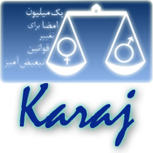

|
|

وبلاگ کمپين در کرج راه اندازي شد
دو شنبه9 اردیبهشت 1387
تغيير براي برابري: تعدادي از اعضاء کمپين يک ميليون امضا در کرج وبلاگي با عنوان "کرج براي برابري "راه اندازي کردند.
در اولين مطلب منتشر شده در اين وبلاگ آمده است :"وبلاگ “کرج برای برابری” محلی ست برای بیان درد مشترک همه زنانی که بلندگویی برای فریاد کردن زمزمه برابریخواهی که سالهاست در گلویشان خفه شده، ندارند و آینهایست برای انعکاس رنج همه دوستانی که برابری را حداقل حق خویش میپندارند. پس زن و مرد، پیر و جوان گام برمیداریم به سوی خانههایی که در آن برای وارد شدن نپرسند از تو که جنست چیست! خانههایی از جنس دوستی و برابری و صمیمت و همدلی. خانهای که در آن کودکان را دار نمیزنند و زنان را تحت کلمه مقدس ازدواج به بند نمیکشند! خانهای که معیار تعیین میزان ارزش و عقل آدمها، جنسیتشان نباشد."
براي کليه دوستان کمپيني در کرج آرزوي موفقيت داريم و آغاز به کار اين وبلاگ را تبريک مي گوييم.